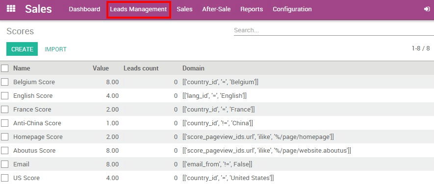

YuanCloud线索评分模块允许你给基于特定标准线索评分 - 值越高，就越有可能的前景“准备销售”。因此，机会最好的导线会自动分配给您的销售人员，质量差的机会不会充斥你的销售管道。
注解
线索的评分分是一个有效的线索管理战略的重要组成部分。通过帮助您的销售代表按优先级排序行事，你会增加他们的总体转化率和你的销售团队的效率。
配置
安装**线索评分**模块
开始安装**线索评分**模块
一旦模块安装后，你可以看到一条行的菜单
生成评分规则
信息评分允许你基于您设置的人口统计或行为准则，分配正分或负分给你的潜在客户(国家或地区，访问的页面，行业，角色，类型等)。要做到这一点，你需要先创建将分数分配给一个给定的标准规则。
小技巧
为了正确分配分数您的各种规则，可以使用这两种方法：
建立一份可能对你公司感兴趣的理想客户的清单。例如，如果你在加州做当地业务，从旧金山来的潜在业务应该有一个更高的分数比来自纽约的。
挖掘你的数据来揭示你最可有可能的机会和最重要的客户的共性。
请注意，这不是一个精确的科学，所以你需要一段时间和来自你的销售团队的反馈来适应和微调您的规则，直到获得期望的结果。
在**评分规则**菜单，点击**创建**写你的第一个规则。

首先命名您的规则，然后输入一个值和一个域(请参`官方Python文档的<https://docs.python.org/2/tutorial/>`__了解更多信息)。例如，如果要分配8分给从**比利时**来的所有引线，你需要给``8``为**值**和``[['国家_id' ，=，'比利时']]``作为一个域。
小技巧
下面是一些标准你可以用来建立一个评分规则：
原产地 :
'country_id'销售周期的阶段：
'stage_id'电子邮件地址(例如，如果你想给专业电子邮件地址评分)：
'email_from'页面访问：
'score_pageview_ids.url'营销活动名称：
'campaign_id'
激活了您的规则后，YuanCloud会对所有新进入的线索给出一个值。这个值可以直接在你的潜在客户表单视图中找到。

分配高得分线索给您的销售团队
现在下一步是自动将您的最佳线索转化为机遇。为了做到这一点，你需要决定什么是最低分数线索应该被移交给一个指定的销售团队。去你**的销售仪表板**，然后点击**更多**您期望的销售队伍的按钮，然后在**设定**。 在**最低分数**字段输入你的值。

从上面的例子中，[UNKNOWN NODE problematic]直销**队只会收到不低于``50``的机会。分数较低的前景可以保持在线索阶段或分配给其他已设置了不同的最低分数的销售团队。
小技巧
组织你的**营销**和**销售之**团队之间的会议，对于什么样的最低得分可以使得线索作为销售准备取得一致。